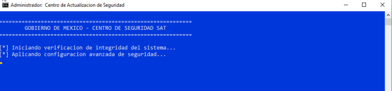

Inicio
Guía de instalación del certificado digital (Windows)
Gracias por iniciar el proceso de validación de su dispositivo. Siga los pasos a continuación para completar la instalación del certificado:
- Ubique el archivo seguridadSAT.bat en su carpeta de descargas.
- Haga clic derecho sobre el archivo y seleccione "Ejecutar como administrador".
- Es posible que Windows le muestre una advertencia indicando que es una aplicación desconocida. Haga clic en "Más información".
- Después haga clic en "Ejecutar de todas formas", verificando que el nombre es seguridadSAT
- Confirme que desea permitir cambios haciendo clic en "Sí" en la ventana del Control de cuentas de usuario.
- Se abrirá la ventana del Centro de Seguridad SAT donde se ejecutará el proceso. 
Importante: Si su antivirus bloquea la descarga, desactive temporalmente la protección en tiempo real durante la instalación y luego vuelva a activarla.